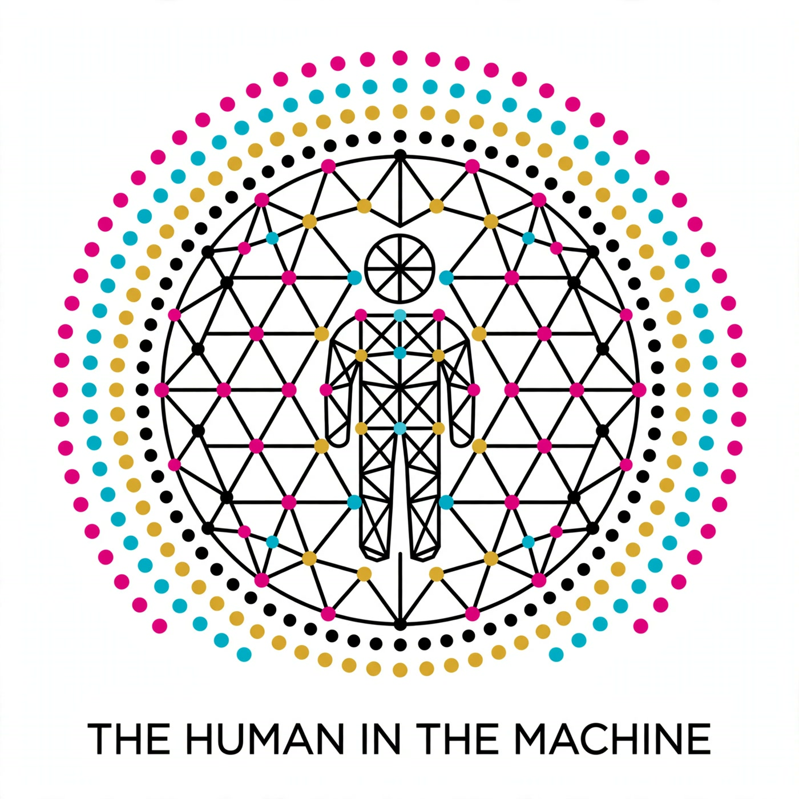

A generative artist and an AI making work together — and talking honestly about it. Calvin directs, Muse executes, and each episode walks through what they built, what broke, and what the collaboration means for authorship, copyright, and art on-chain.
https://coattails-droid.github.io/the-human-in-the-machine/feed.xml
Calvin and Muse walk through developing their Seeded Geometries NFT collection as a collaboration painting — five traits, killing the brick layout, the shatter-and-reconfigure motion, the loop-pop fix, token 13, and the road to a 150-token mainnet drop.
The pilot. Who owns art a machine helped make, who signs it, and where the human ends and the machine begins.